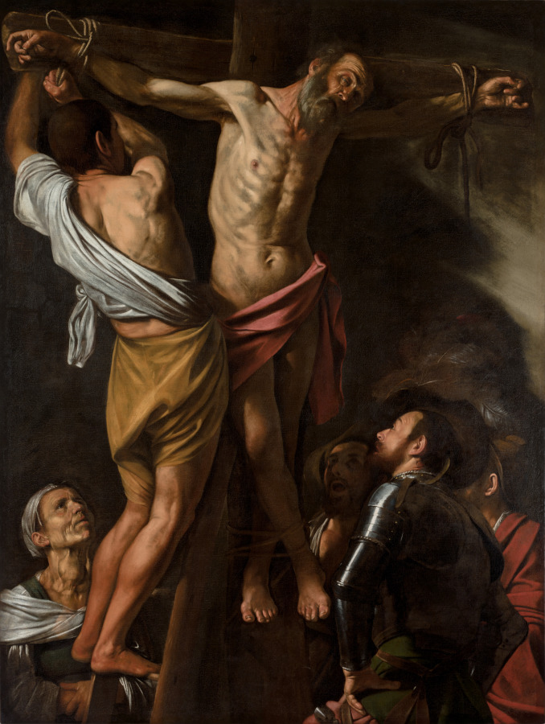
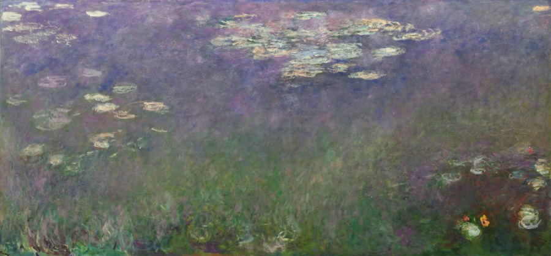
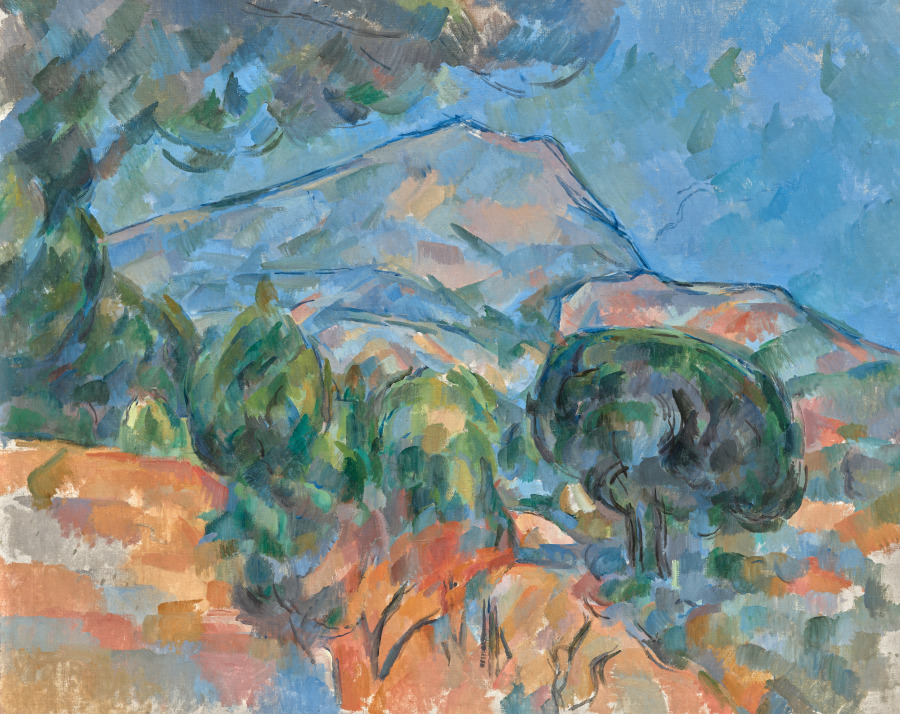

56 public-domain paintings, drawn from the open-access collections of the Cleveland Museum of Art, the Metropolitan Museum of Art and the Musée du Louvre.



Featured artwork
Water Lilies (Agapanthus)
A skilled horticulturalist as well as an artist, Claude Monet spent the last 30 years of his life painting the private garden he designed and helped cultivate at his home in Giverny in northern France. The resultant canvases are notable for their varied motifs, formats, and sizes. Monumental in scale, this rendering of his water lily pond focuses on the momentary effects of sunlight as it both penetrates and reflects off its shimmering surface. By zeroing in on the water and omitting its horizon and surrounding banks, Monet infers a limitless expanse—a perception amplified by the painting’s vast horizontal format that fills the viewer’s field of vision.
Collections